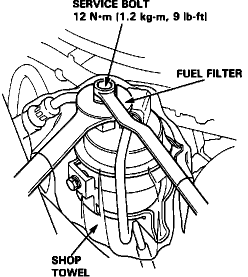

Fuel Pressure Test Port: Locations
WARNING: DO NOT smoke while working on the fuel system. Keep open flame away from your work area. Make sure the engine is OFF before relieving fuel pressure.NOTE: The factory radio has a coded theft protection circuit. Obtain the anti-theft code number before disconnecting the battery cable.
Fuel System Service Bolt/Fuel Filter:

The fuel pressure test port (6 mm service bolt) is located on top of the banjo bolt fitting on the fuel filter. Remove the service bolt to access the port.